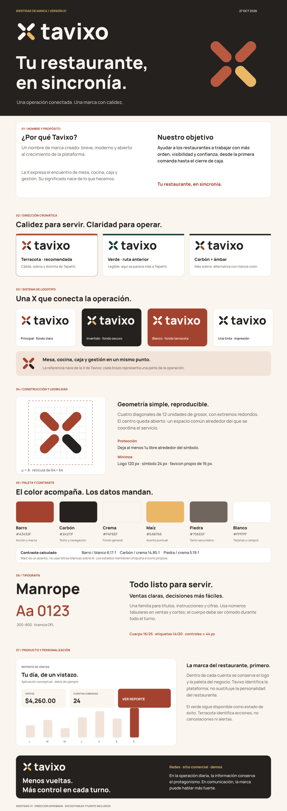

IDENTIDAD Y DISEÑO
Una operación conectada.
Una marca con calidez.
La recomendación para Tavixo es terracota, carbón y crema. El verde permanece como ruta comparativa y como color de éxito; cada restaurante conserva su propia identidad.
Estado: dirección aprobada e integrada en la app el 27 de octubre de 2026. Las marcas de restaurantes se conservan.


NOMBRE Y PROPÓSITO
¿Por qué nos llamamos Tavixo?
Tavixo es un nombre de marca creado para nuestra plataforma de restaurantes. Lo elegimos por ser breve, sonar moderno y permitir que la marca crezca junto con el producto: desde tomar una comanda hasta coordinar la operación de varias sucursales.
Su significado lo construimos con lo que hacemos. La X se convierte en el punto de encuentro de mesa/comandas, cocina, caja y gestión. Es una interpretación de marca, no una traducción ni una etimología del nombre. Cada restaurante conserva su propio nombre y personalidad.
Nuestro objetivo
Ayudar a los restaurantes a trabajar con más orden, visibilidad y confianza, desde la primera comanda hasta el cierre de caja.
Queremos que el equipo comparta información clara sobre los pedidos y el servicio, y que quien administra el negocio pueda entender sus ventas y cobros. Buscamos reducir confusiones y facilitar las decisiones diarias, para dedicar más atención a los clientes.
Misión
Conectar mesas, cocina, caja e información del negocio mediante herramientas claras y prácticas para las personas que operan un restaurante.
Visión
Ser una herramienta de confianza para restaurantes independientes y negocios en crecimiento, acompañándolos a ordenar su operación sin perder su identidad.
Tu restaurante, en sincronía.



Por qué esta dirección
Terracota aporta una base cálida al sistema y lo diferencia de Tepahti. Carbón sostiene las cifras y la lectura. Crema reduce el peso visual de grandes superficies. Maíz se usa en pequeñas dosis. Es una decisión de identidad, no una promesa sobre apetito o ventas.
La X abierta toma una letra del nombre y reúne cuatro frentes: mesa/comandas, cocina, caja y gestión. El centro compartido expresa coordinación.
Archivos del logo


Plantilla para redes · Icono de app · Favicon simplificado · Construcción geométrica · Licencia de la fuente


SVG: letras convertidas a curvas, sin fuente instalada. PNG: exportación transparente. El icono de app debe probarse con las máscaras de la PWA antes de sustituirlo.
Paleta y lectura
Barro #A3432F
Carbón #24211F
Crema #FAF6EF
Texto barro sobre blanco: 6.17:1. Carbón sobre crema: 14.85:1. Piedra sobre crema: 5.19:1. Calculados con luminancia sRGB; usar como referencia el criterio de contraste mínimo de W3C. No usar letras blancas sobre maíz.
Los estados mantienen texto e iconos: éxito verde, advertencia ámbar, error grana e información azul. La marca no sustituye esos significados.
Reglas prácticas
- Símbolo en retícula 64 × 64, trazo de 12 y extremos redondos. Módulo u = 8.
- Protección exterior de 1u. No estirar, girar o recolorear partes del logo.
- Mínimos recomendados: logo 120 px; símbolo 24 px; favicon simplificado 16 px.
- Manrope para títulos y cuerpo. Peso 800 en logo/titulares, 400–500 en lectura.
- Importes con cifras tabulares: $1,234.00 · $9,876.00.
- Cuerpo de 16 px, botones de al menos 44 px y foco visible.
- Restaurante primero dentro de la operación y en tickets. Tavixo primero en acceso y comunicación comercial.
La guía completa contiene medidas, tokens, aplicaciones, voz, usos incorrectos y fuentes.